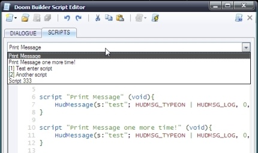
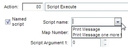
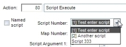
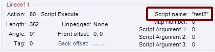

GZDoom Builder 包含许多功能，可帮助你更轻松地分配和编辑脚本。 脚本编辑器现在有一个“脚本名称”下拉列表，可让你更快地查看和选择单个脚本。 伪命名脚本如果你像下面这样在脚本的左花括号之后添加一条注释：script 1 (void) { //My Pseudo-named script [code] } 它就会被用作“脚本名称”下拉列表以及物件和线段编辑窗口下拉列表中的脚本名称（示例脚本将被命名为“[1] My Pseudo-named script”）。注意：“脚本名称”下拉列表中的项目会在脚本成功编译后更新。 |
 |
现在可以更轻松地设置物件脚本和线段脚本。 注意：要移除命名脚本或普通脚本，请清空脚本选择文本框 |
  |
| 如果某个物件或线段附加了命名脚本，它将在信息面板中显示。 |  |